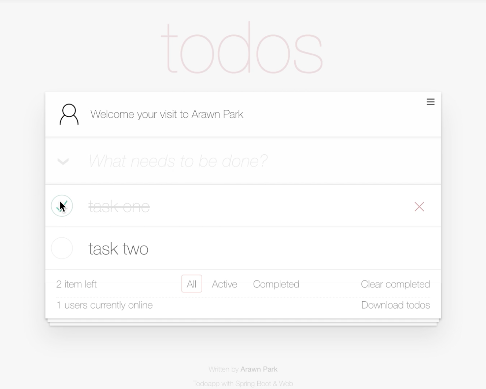

Mastering Spring Web 101 Workshop
스프링 기반 웹 애플리케이션 - 서버 사이드를 실습 중심으로 학습하는 워크샵입니다.
본 워크숍은 Spring MVC와 Spring Boot로 웹 애플리케이션 서버 사이드(Server-side)를 직접 개발하며 학습하는 워크숍입니다. 참가자는 Spring MVC의 핵심인 HTTP 요청 연결, 데이터 바인딩, 응답 및 예외 처리 방법을 배우고 경험 할 수 있습니다.
- Spring MVC와 Spring Boot가 제공하는 다양한 웹 기능을 학습할 수 있습니다.
- 웹 애플리케이션에 서버 사이드 전체를 개발해보는 경험을 할 수 있습니다.
- 프론트엔드 엔지니어와 협업하며 프로젝트를 수행하는 것과 유사한 경험을 할 수 있습니다.
- 보편적인 웹 애플리케이션 아키텍처를 엿볼 수 있습니다.
- 라이브 코딩과 설명, 실습으로 16시간(하루 8시간, 이틀간) 동안 진행됩니다.
목표
- Spring MVC의 구조와 아키텍처를 살펴봅니다.
- Spring Boot가 제공하는 웹 기능도 함께 살펴봅니다.
- HTTP 요청을 연결하는 방법을 학습합니다.
- URL과 HTTP Method, Header 등 사용해 연결하는 방법을 다룹니다.
- 정적 자원(css, image, javascript)을 연결하는 방법을 다룹니다.
- HTTP 요청시 클라이언트(브라우저)가 전송한 데이터을 다루는 방법을 학습합니다.
- HTML 폼, JSON 페이로드, 파일 등 다양한 요청 데이터를 다룹니다.
- 요청 처리 결과를 클라이언트(브라우저)에게 응답하는 방법을 학습합니다.
- HTML 또는 JSON, 파일 컨텐트를 다룹니다.
- 요청 및 응답 처리 과정에서 발생한 예외를 처리하는 방법을 학습합니다.
- 오류 페이지와 메시지를 처리하는 방법을 다룹니다.
- 요청과 응답에 대해 전처리 또는 후처리 방법을 학습합니다.
- 사용자 인증과 인가 또는 로깅 등 처리 방법을 다룹니다.
- i18n을 위한 메세지 다국어 처리 방법을 학습합니다.
학습환경
사용하는 JVM 플랫폼 및 프레임워크, 라이브러리와 도구는 아래와 같습니다.
- Java 1.8.x 및 Java EE 7을 사용합니다.
- Spring MVC 5.x, Spring Boot 2.x를 사용합니다.
- 빌드 도구로 그레이들(Gradle)을 사용합니다.
- IDE는 Spring Tool Suite를 사용합니다.
진행방식
참가자는 제공되는 애플리케이션 정의서와 Web API 정의서, 그리고 웹 클라이언트로 할 일 관리 웹 애플리케이션(todos)에 서버 사이드를 개발합니다.

가이드 러너가 라이브 코딩과 함께 Spring MVC(또는 Spring Boot)에 기능을 설명해주면, 참가자는 해당 코드를 직접 작성하고 실행-테스트 하는 과정을 반복하며 완전한 웹 애플리케이션을 개발해보는 방식으로 진행됩니다.
참가대상 및 준비물
본 워크숍은 자바(Java)와 웹(Web)에 대한 이해가 있는 분을 대상으로 합니다.
- 자바(Java)에 언어 특징과 문법을 이해하고 사용할 줄 알아야 합니다.
- 서블릿(Servlet)에 대해 이해도가 있으면, 워크숍 과정에서 좀 더 많은 것을 얻을 수 있습니다.
- HTTP에 대한 기본 지식과 이해가 필요합니다.
- 요청(Request)과 응답(Response)이라는 웹 처리 흐름에 대한 이해가 있어야 합니다.
- HTTP 헤더, 쿠키, 세션, 상태코드 등에 대한 이해가 있어야 합니다.
- 미디어타입(Media Type)에 대해 이해도가 있으면, 워크숍 과정에서 좀 더 많은 것을 얻을 수 있습니다.
- 웹 기술(HTML, CSS, JavaScript)에 대해 이해도가 있으면, 워크숍 과정에서 좀 더 많은 것을 얻을 수 있습니다.
참가자는 Java 1.8.x와 Spring Tool Suite가 설치된 개인 노트북을 지참해야 합니다.
참가신청 및 비용
- 본 워크숍은 유료로 사전 신청 및 결제 후 참여할 수 있습니다.
- 신청 및 결제는 페스타(Festa)를 통해 할 수 있습니다.
- 참가비는 30만원이며, 참가비의 15%는 오픈소스 기부활동으로 사용됩니다.
- 참가비 할인 행사가 진행되고 있습니다.
- 할인 행사시 기부 활동으로 이어지지 않습니다.
참가취소 및 환불 정책
- 마감전 취소/환불은 페스타에서 할 수 있습니다.
- 참가 취소/환불 규정은 페스타 약관에 따라 처리됩니다.
- 참가비의 100%가 환불됩니다.
- 마감후 취소/환불은 메일(springrunner.kr@gmail.com)로 신청해야합니다.
- 메일 내용에 은행 / 환불계좌 / 계좌주 / 연락처 / 페스타 아이디를 작성해 보내야합니다.
- 참가비의 50%가 환불됩니다. (교육장 계약 비용으로 인한 점 양해바랍니다)
Mastering Spring Web 101 Workshop (5th)
- 신청기간 및 인원
- 2019년 10월 1일 10:00 ~ 2019년 10월 11일 23:00 / 12명
- 일정
- 1일차: 2019년 10월 19일 10:00 ~ 19:00 (점심식사 1시간 포함)
- 2일차: 2019년 10월 26일 10:00 ~ 19:00 (점심식사 1시간 포함)
- 장소
- 장소: 서울특별시 강남구 논현로105길 10 2층, 펀에듀스페이스 (네이버지도로 보기 →)
Done: Mastering Spring Web 101 Workshop (4th)
- 일정: 2019년 9월 7일 10:00 ~ 19:00 / 9월 8일 10:00 ~ 19:00
- 장소: 서울특별시 강남구 테헤란로4길 6, 마이워크스페이스 1호점 컨퍼런스룸 (네이버지도로 보기 →)
- 인원: 11명
Done: Mastering Spring Web 101 Workshop (3rd)
- 일정: 2019년 8월 24일 10:00 ~ 19:00 / 8월 25일 10:00 ~ 19:00
- 장소: 서울특별시 강남구 논현로105길 10 2층, 펀에듀스페이스
- 인원: 13명
Done: Mastering Spring Web 101 Workshop (2nd)
- 일정: 2019년 7월 20일 ~ 2019년 7월 21일
- 장소: 서울특별시 강남구 논현로105길 10 2층, 펀에듀스페이스
- 인원: 11명
Done: Mastering Spring Web 101 Workshop (1st)
- 일정: 2019년 2월 16일 ~ 2019년 2월 17일
- 장소: 서울특별시 강남구 강남대로62길 23 4층, 코드스쿼드
- 인원: 10명